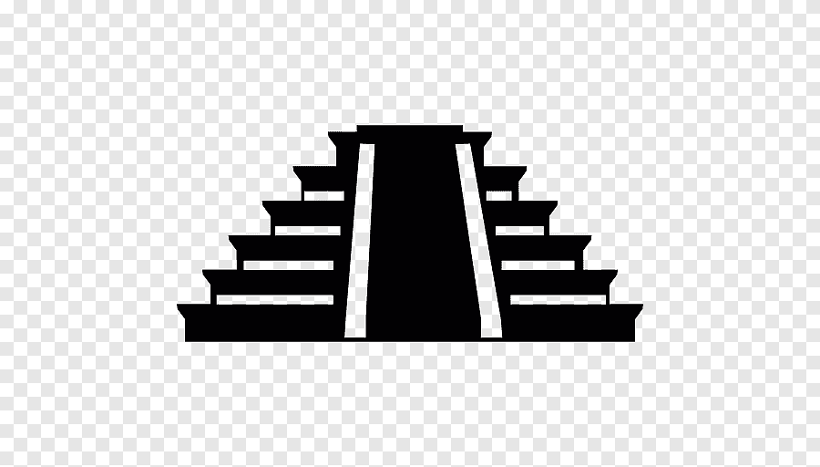

Maravillas del mundo moderno
 Iniciar Sesion
Iniciar Sesion Regresar
Regresar Maravillas del mundo moderno
Regresar Chicen Itza
Chichén Itzá es una antigua ciudad maya ubicada en la península de
Yucatán, México. Su nombre significa "Boca del pozo de los Itzáes" en
lengua maya, refiriéndose a los Itzáes, una tribu maya que, según la
leyenda, se estableció en la región. La ciudad fue uno de los
principales centros políticos y religiosos de la civilización maya entre
los siglos VI y X d.C.
La historia de Chichén Itzá se divide en tres periodos principales: el
periodo inicial, el periodo clásico y el periodo posclásico. Durante el
periodo clásico, entre los siglos VII y X d.C., la ciudad se convirtió
en un importante centro de poder en la región. Sin embargo, alrededor
del año 1000 d.C., Chichén Itzá experimentó un declive y fue abandonada
por razones aún no totalmente comprendidas.
Chichén Itzá fue redescubierta por exploradores europeos en el siglo
XVI, pero la verdadera magnitud de la ciudad solo se reveló con
excavaciones arqueológicas en el siglo XIX y principios del XX. La
ciudad está conocida por su arquitectura única, que combina elementos de
la cultura maya con influencias de otras culturas mesoamericanas. Entre
los edificios más destacados se encuentra la pirámide de Kukulcán,
también conocida como El Castillo, que sirvió como templo y observatorio
astronómico.
Uno de los aspectos más fascinantes de Chichén Itzá es la alineación
arquitectónica de sus estructuras con eventos astronómicos, como el
equinoccio de primavera. Durante este fenómeno, la luz del sol crea la
ilusión de una serpiente que baja por las escaleras de la pirámide de
Kukulcán, simbolizando la descenso del dios serpiente emplumada,
Kukulcán.
Chichén Itzá fue declarada Patrimonio de la Humanidad por la UNESCO en
1988 y una de las Nuevas Siete Maravillas del Mundo en 2007. Aunque se
ha vuelto una atracción turística muy popular, las autoridades han
tomado medidas para preservar y proteger el sitio arqueológico.